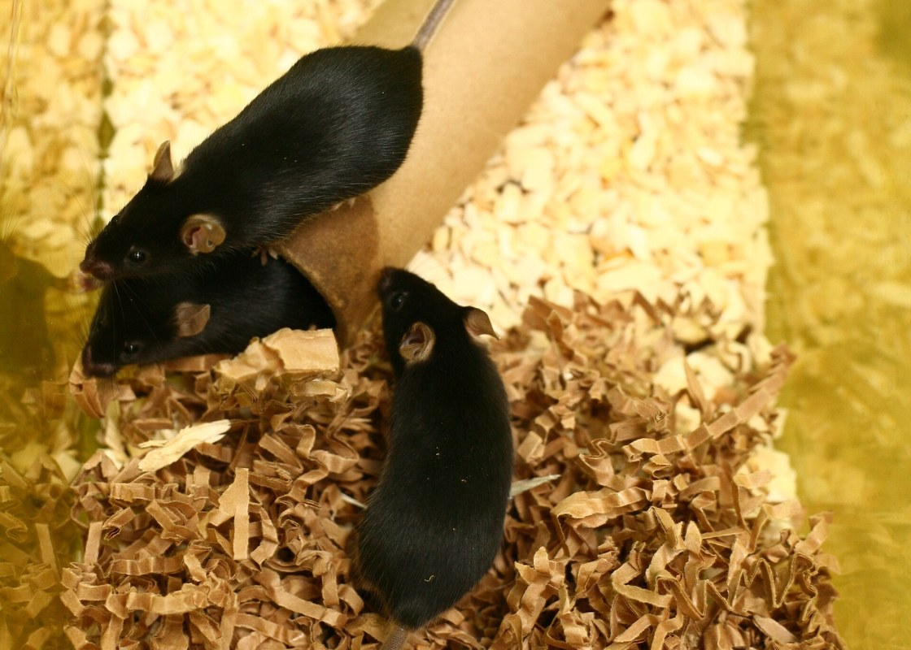
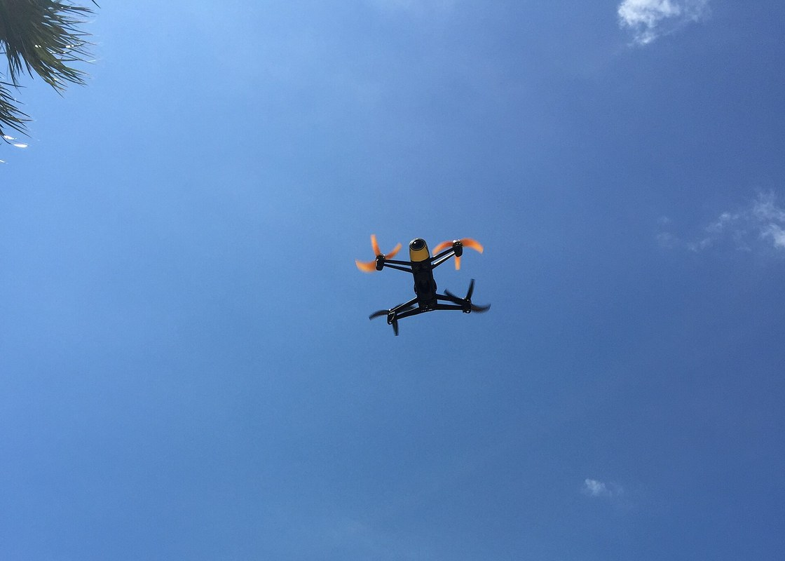
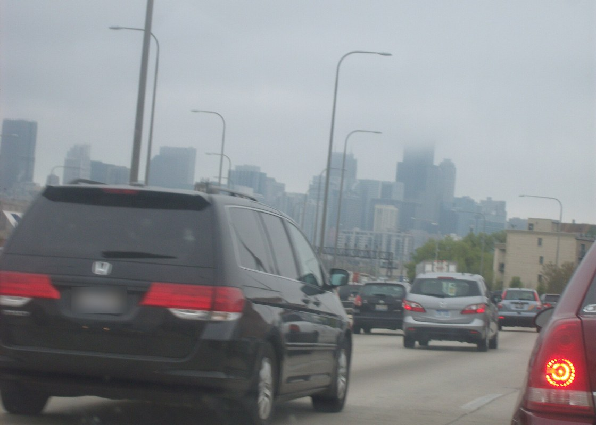
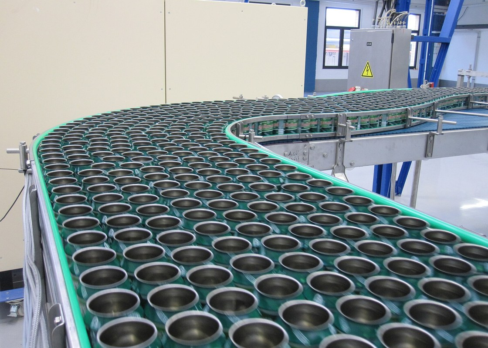

m1
m2 or m1?
m3
Understanding Animal Research · CC BY-SA 4.0
Look-alike lab mice
Identical mice huddle and their IDs swap. The agent settles who is who.
in the demo: Qb vs Qbo

drone 0.62
bird? 0.31
Nicolas Halftermeyer · CC BY-SA 4.0
Tiny things in a big sky
A drone, a bird or a ball is a few pixels. Decoys get a second look, not an alarm.
in the demo: the ball decoy

car 12
car 7
car 9: lost?
Lord Laitinen · CC BY-SA 4.0 · plate blurred
Vehicles in fog
Cars blur, hide and pass close. The agent fixes tracks that break or swap.
in the demo: the swapped cats

dent? 0.44
Helfmann · CC BY-SA 3.0
A production line
A small model checks every can on site; only the odd few go to the AI.
in the demo: ~1% reviewed